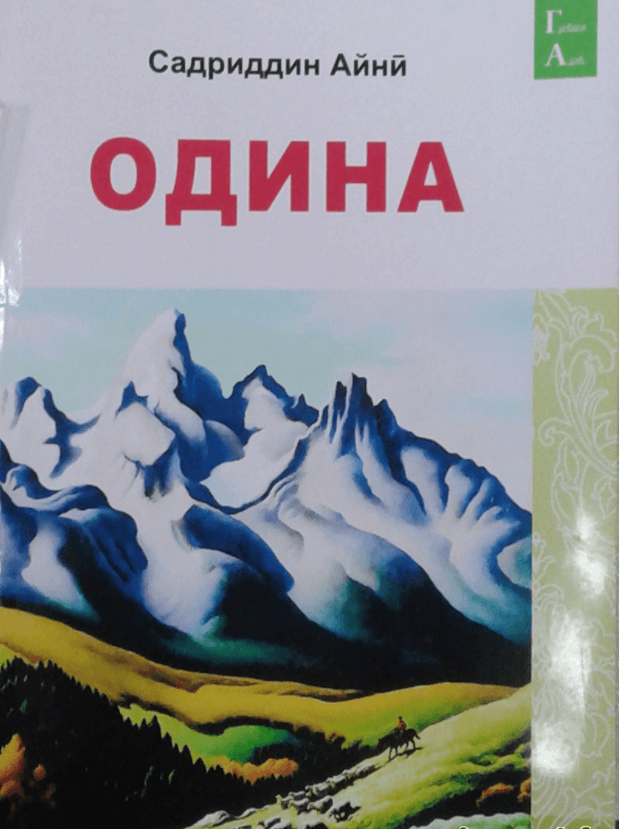

Асарҳои машҳур
.jpg)
Ёддоштҳо
«Ёддоштҳо» беҳтарин намунаи насри муосири тоҷик буда осонфаҳм, равон, дилрас ва ҷаззоб аст.

Одина
Одина — повести Садриддин Айнӣ, аввалин асари насри реалистии адабиёти советии тоҷик мебошад. Бори аввал солҳои 1924—1925 рӯзномаи «Овози тоҷик» бо номи «Саргузашти як тоҷики камбағал» ва соли 1927 ба номи «Саргузашти як тоҷики камбағал, ё ки Одина» дар шакли китоб ба табъ расид.Дар бораи зиндагии мардум
Марги судхӯр
«Марги Судхӯр» яке аз асарҳои пурмӯҳтаво ва ҷолиби устод Айнӣ буда, соли 1939 эҷод шудааст. Ба ин нависандаи маъруф мушоҳида ва кунҷковӣ имкон додаст, ки симои ашхоси хасису пулпарастро дар мисоли Қоришкамба бо тамоми ҷӯзъёташ ошкор намояд, то ояндагон аз он сабақ бигиранд.

Мактаби кӯҳна
Повести "Мактаби кӯҳна" соли 1936 аз ҷониби Садриддин Айнӣ, асосгузори адабиёти шӯравӣ, навишта шудааст. Он бори аввал соли 1950 аз ҷониби Нашриёти давлатии Тоҷикистон нашр шудааст. Дар соли 2010, повести "Мактаби кӯҳна"-и классики шӯравии тоҷик Садриддин Айнӣ бо шакли нав ва муосир нашр шуд.